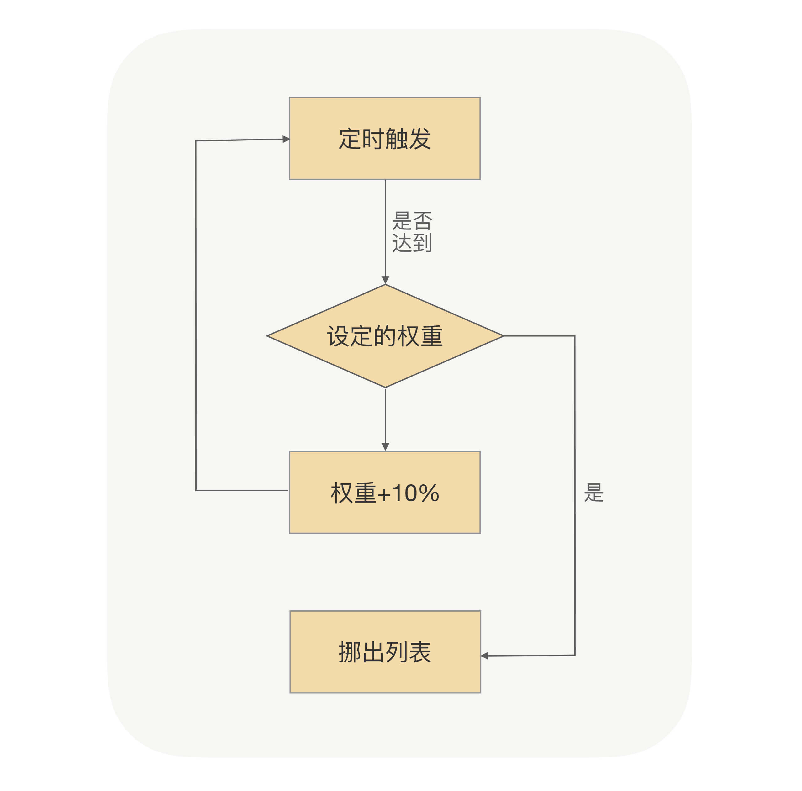
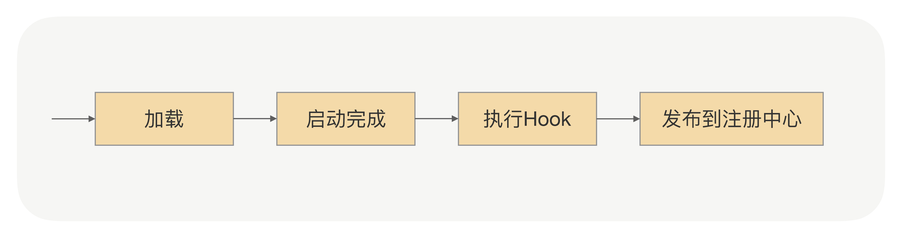

- 00 开篇词 别老想着怎么用好RPC框架，你得多花时间琢磨原理.md.html
- 01 核心原理：能否画张图解释下RPC的通信流程？.md.html
- 02 协议：怎么设计可扩展且向后兼容的协议？.md.html
- 03 序列化：对象怎么在网络中传输？.md.html
- 04 网络通信：RPC框架在网络通信上更倾向于哪种网络IO模型？.md.html
- 05 动态代理：面向接口编程，屏蔽RPC处理流程.md.html
- 06 RPC实战：剖析gRPC源码，动手实现一个完整的RPC.md.html
- 07 架构设计：设计一个灵活的RPC框架.md.html
- 08 服务发现：到底是要CP还是AP？.md.html
- 09 健康检测：这个节点都挂了，为啥还要疯狂发请求？.md.html
- 10 路由策略：怎么让请求按照设定的规则发到不同的节点上？.md.html
- 11 负载均衡：节点负载差距这么大，为什么收到的流量还一样？.md.html
- 12 异常重试：在约定时间内安全可靠地重试.md.html
- 13 优雅关闭：如何避免服务停机带来的业务损失？.md.html
- 14 优雅启动：如何避免流量打到没有启动完成的节点？.md.html
- 15 熔断限流：业务如何实现自我保护_.md.html
- 16 业务分组：如何隔离流量？.md.html
- 17 异步RPC：压榨单机吞吐量.md.html
- 18 安全体系：如何建立可靠的安全体系？.md.html
- 19 分布式环境下如何快速定位问题？.md.html
- 20 详解时钟轮在RPC中的应用.md.html
- 21 流量回放：保障业务技术升级的神器.md.html
- 22 动态分组：超高效实现秒级扩缩容.md.html
- 23 如何在没有接口的情况下进行RPC调用？.md.html
- 24 如何在线上环境里兼容多种RPC协议？.md.html
- 加餐 RPC框架代码实例详解.md.html
- 加餐 谈谈我所经历过的RPC.md.html
- 答疑课堂 基础篇与进阶篇思考题答案合集.md.html
- 结束语 学会从优秀项目的源代码中挖掘知识.md.html
- 捐赠
14 优雅启动：如何避免流量打到没有启动完成的节点？
你好，我是何小锋。上一讲我们介绍了优雅停机，就是为了让服务提供方在停机应用的时候，保证所有调用方都能“安全”地切走流量，不再调用自己，从而做到对业务无损。其中实现的关键点就在于，让正在停机的服务提供方应用有状态，让调用方感知到服务提供方正在停机。
接着上一讲的内容，今天我们来聊聊优雅启动。
是不是很诧异？应用启动居然也要这么“讲究”吗？这就好比我们日常生活中的热车，行驶之前让发动机空跑一会，可以让汽车的各个部件都“热”起来，减小磨损。
换到应用上来看，原理也是一样的。运行了一段时间后的应用，执行速度会比刚启动的应用更快。这是因为在Java里面，在运行过程中，JVM虚拟机会把高频的代码编译成机器码，被加载过的类也会被缓存到JVM缓存中，再次使用的时候不会触发临时加载，这样就使得“热点”代码的执行不用每次都通过解释，从而提升执行速度。
但是这些“临时数据”，都在我们应用重启后就消失了。重启后的这些“红利”没有了之后，如果让我们刚启动的应用就承担像停机前一样的流量，这会使应用在启动之初就处于高负载状态，从而导致调用方过来的请求可能出现大面积超时，进而对线上业务产生损害行为。
在上一讲我们说过，在微服务架构里面，上线肯定是频繁发生的，那我们总不能因为上线，就让过来的请求出现大面积超时吧？所以我们得想点办法。既然问题的关键是在于“刚重启的服务提供方因为没有预跑就承担了大流量”，那我们是不是可以通过某些方法，让应用一开始只接少许流量呢？这样低功率运行一段时间后，再逐渐提升至最佳状态。
这其实就是我今天要和你分享的重点，RPC里面的一个实用功能——启动预热。
启动预热
那什么叫启动预热呢？
简单来说，就是让刚启动的服务提供方应用不承担全部的流量，而是让它被调用的次数随着时间的移动慢慢增加，最终让流量缓和地增加到跟已经运行一段时间后的水平一样。
那在RPC里面，我们该怎么实现这个功能呢？
我们现在是要控制调用方发送到服务提供方的流量。我们可以先简单地回顾下调用方发起的RPC调用流程是怎样的，调用方应用通过服务发现能够获取到服务提供方的IP地址，然后每次发送请求前，都需要通过负载均衡算法从连接池中选择一个可用连接。那这样的话，我们是不是就可以让负载均衡在选择连接的时候，区分一下是否是刚启动不久的应用？对于刚启动的应用，我们可以让它被选择到的概率特别低，但这个概率会随着时间的推移慢慢变大，从而实现一个动态增加流量的过程。
现在方案有了，我们就可以考虑具体实现了。
首先对于调用方来说，我们要知道服务提供方启动的时间，这个怎么获取呢？我这里给出两种方法，一种是服务提供方在启动的时候，把自己启动的时间告诉注册中心；另外一种就是注册中心收到的服务提供方的请求注册时间。这两个时间我认为都可以，不过可能你会犹豫我们该怎么确保所有机器的日期时间是一样的？这其实不用太关心，因为整个预热过程的时间是一个粗略值，即使机器之间的日期时间存在1分钟的误差也不影响，并且在真实环境中机器都会默认开启NTP时间同步功能，来保证所有机器时间的一致性。
不管你是选择哪个时间，最终的结果就是，调用方通过服务发现，除了可以拿到IP列表，还可以拿到对应的启动时间。我们需要把这个时间作用在负载均衡上，在[第 11 讲] 我们介绍过一种基于权重的负载均衡，但是这个权重是由服务提供方设置的，属于一个固定状态。现在我们要让这个权重变成动态的，并且是随着时间的推移慢慢增加到服务提供方设定的固定值，整个过程如下图所示：

通过这个小逻辑的改动，我们就可以保证当服务提供方运行时长小于预热时间时，对服务提供方进行降权，减少被负载均衡选择的概率，避免让应用在启动之初就处于高负载状态，从而实现服务提供方在启动后有一个预热的过程。
看到这儿，你可能还会有另外一个疑问，就是当我在大批量重启服务提供方的时候，会不会导致没有重启的机器因为扛的流量太大而出现问题？
关于这个问题，我是这么考虑的。当你大批量重启服务提供方的时候，对于调用方来说，这些刚重启的机器权重基本是一样的，也就是说这些机器被选中的概率是一样的，大家都是一样得低，也就不存在权重区分的问题了。但是对于那些没有重启过的应用提供方来说，它们被负载均衡选中的概率是相对较高的，但是我们可以通过[第 11 讲] 学到的自适应负载的方法平缓地切换，所以也是没有问题的。
启动预热更多是从调用方的角度出发，去解决服务提供方应用冷启动的问题，让调用方的请求量通过一个时间窗口过渡，慢慢达到一个正常水平，从而实现平滑上线。但对于服务提供方本身来说，有没有相关方案可以实现这种效果呢？
当然有，这也是我今天要分享的另一个重点，和热启动息息相关，那就是延迟暴露。
延迟暴露
我们应用启动的时候都是通过main入口，然后顺序加载各种相关依赖的类。以Spring应用启动为例，在加载的过程中，Spring容器会顺序加载Spring Bean，如果某个Bean是RPC服务的话，我们不光要把它注册到Spring-BeanFactory里面去，还要把这个Bean对应的接口注册到注册中心。注册中心在收到新上线的服务提供方地址的时候，会把这个地址推送到调用方应用内存中；当调用方收到这个服务提供方地址的时候，就会去建立连接发请求。
但这时候是不是存在服务提供方可能并没有启动完成的情况？因为服务提供方应用可能还在加载其它的Bean。对于调用方来说，只要获取到了服务提供方的IP，就有可能发起RPC调用，但如果这时候服务提供方没有启动完成的话，就会导致调用失败，从而使业务受损。
那有什么办法可以避免这种情况吗？
在解决问题前，我们先看下出现上述问题的根本原因。这是因为服务提供方应用在没有启动完成的时候，调用方的请求就过来了，而调用方请求过来的原因是，服务提供方应用在启动过程中把解析到的RPC服务注册到了注册中心，这就导致在后续加载没有完成的情况下服务提供方的地址就被服务调用方感知到了。
这样的话，其实我们就可以把接口注册到注册中心的时间挪到应用启动完成后。具体的做法就是在应用启动加载、解析Bean的时候，如果遇到了RPC服务的Bean，只先把这个Bean注册到Spring-BeanFactory里面去，而并不把这个Bean对应的接口注册到注册中心，只有等应用启动完成后，才把接口注册到注册中心用于服务发现，从而实现让服务调用方延迟获取到服务提供方地址。
这样是可以保证应用在启动完后才开始接入流量的，但其实这样做，我们还是没有实现最开始的目标。因为这时候应用虽然启动完成了，但并没有执行相关的业务代码，所以JVM内存里面还是冷的。如果这时候大量请求过来，还是会导致整个应用在高负载模式下运行，从而导致不能及时地返回请求结果。而且在实际业务中，一个服务的内部业务逻辑一般会依赖其它资源的，比如缓存数据。如果我们能在服务正式提供服务前，先完成缓存的初始化操作，而不是等请求来了之后才去加载，我们就可以降低重启后第一次请求出错的概率。
那具体怎么实现呢？
我们还是需要利用服务提供方把接口注册到注册中心的那段时间。我们可以在服务提供方应用启动后，接口注册到注册中心前，预留一个Hook过程，让用户可以实现可扩展的Hook逻辑。用户可以在Hook里面模拟调用逻辑，从而使JVM指令能够预热起来，并且用户也可以在Hook里面事先预加载一些资源，只有等所有的资源都加载完成后，最后才把接口注册到注册中心。整个应用启动过程如下图所示：

总结
包括[第 11 讲] 在内，到今天为止，我们就已经把整个RPC里面的启停机流程都讲完了。就像前面说过的那样，虽然启停机流程看起来不属于RPC主流程，但是如果你能在RPC里面把这些“微小”的工作做好，就可以让你的技术团队感受到更多的微服务带来的好处。
另外，我们今天的两大重点——启动预热与延迟暴露，它们并不是RPC的专属功能，我们在开发其它系统时，也可以利用这两点来减少冷启动对业务的影响。
课后思考
在启动预热那部分，我们特意提到过一个问题，就是“当大批量重启服务提供方的时候，会导致请求大概率发到没有重启的机器上，这时服务提供方有可能扛不住”，不知道你是怎么看待这个问题的，是否有好的解决方案呢？
欢迎留言和我分享你的思考，也欢迎你把文章分享给你的朋友，邀请他加入学习。我们下节课再见！
© 2019 - 2023 Liangliang Lee. Powered by gin and hexo-theme-book.